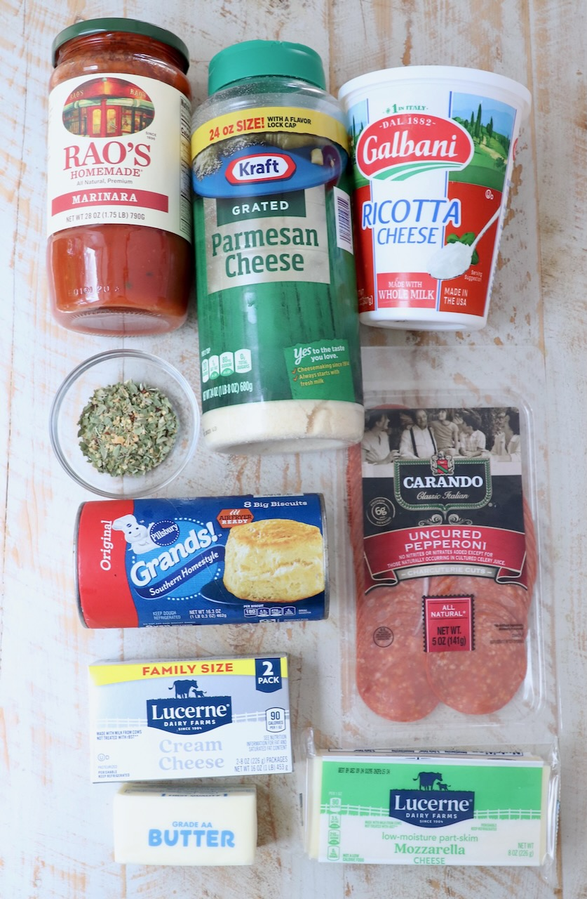
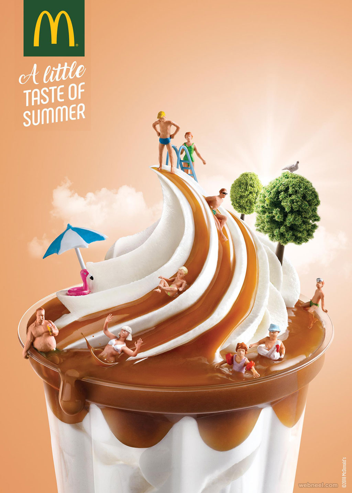

PIZZA-DIP

Detail
Prep Time: 10 minutes
Cook Time: 25-30 minutes
Total Time: 35-40 minutes
Servings: 8 servings
Cuisine: Italian
Calories: 400 kcal
Author: Whitney Bond
Website: https://whitneybond.com/pizza-dip/
Are you looking for the ultimate crowd-pleasing snack
for your next party, game day, or casual get-together?
Look no further. This hot, bubbly Skillet Pizza Dip is the definitive answer to your hosting prayers. It
delivers all the comforting, savory flavors of a classic pepperoni pizza but in a much more shareable,
interactive format. Every scoop is packed with a rich cream cheese base, tangy marinara, and gooey
melted
cheese that pairs flawlessly with golden, garlic-buttered pull-apart bread.
Pro-Tip for the Perfect Cheese Pull: If you want that
picture-perfect, mouth-watering cheese stretch, skip
the pre-shredded cheese from the grocery store aisle. Bagged shredded cheese is coated with anti-caking
agents (like potato starch or cellulose) to keep it from clumping, which unfortunately also stops it
from
melting smoothly. Instead, grab a solid block of low-moisture mozzarella and grate it yourself. Taking
those
two extra minutes to shred your own cheese guarantees a beautifully smooth, undeniably gooey, and
perfectly
stretchy dip every single time!
Part1: 🛒 Ingredients

🧀THE PULL-APART BREAD
- 16.3 ounce can Grands biscuit dough, 8 count
- ¼ cup melted butter
- 2 teaspoons parmesan cheese, grated
- 1 teaspoon Italian seasoning, click link for the recipe
🍞THE PIZZA DIP
- 8 ounces cream cheese, softened
- 1 cup ricotta cheese
- 3 teaspoons Italian seasoning, divided
- 1 cup marinara sauce, or pizza sauce
- 1 ½ cups mozzarella cheese, grated
- 8 slices pepperoni, quartered (optional topping)
Part2:👩🍳Instructions
Prep the Oven and Bread

--

--

--

--
Prep the Dip

--

--

--
--
